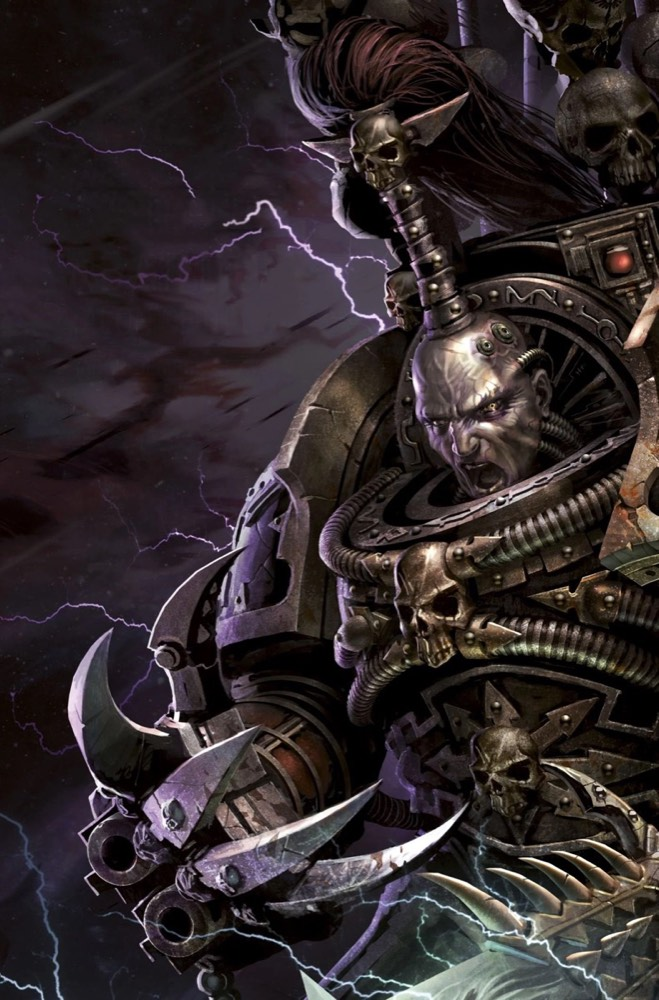
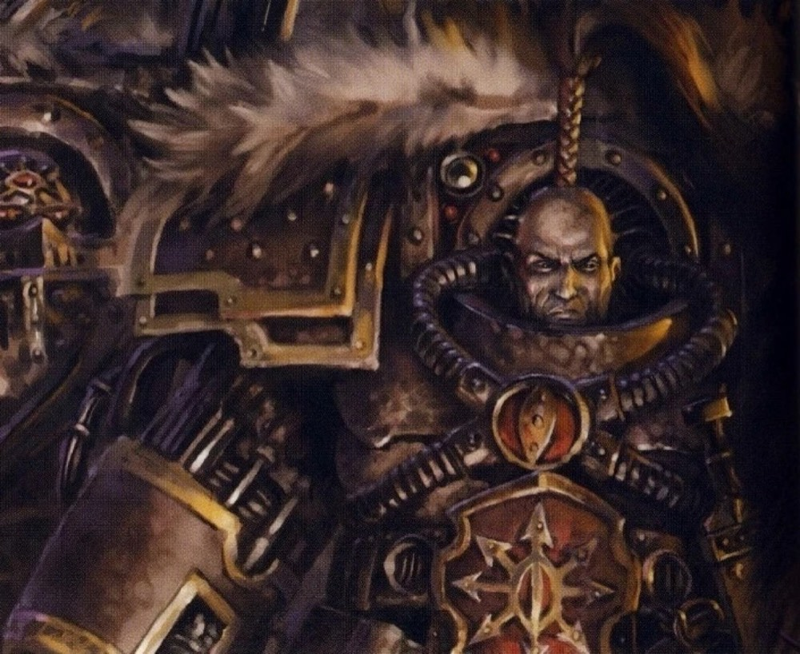

Abaddon the Despoiler
| Abaddon the Despoiler | |
|---|---|
| Ezekyle Abaddon, the Arch-Fiend, Warmaster of the Imperium Nihilus | |
 Abaddon in the Terminator plate of the Sons of Horus, bearing the Talon of Horus, in a plate of the Ordo Malleus | |
| Title(s) | Warmaster of Chaos; Warmaster of the Imperium Nihilus; the Despoiler; the Arch-Fiend; First Captain of the Sons of Horus |
| Allegiance | Imperium of Mankind (until 005.M31); Chaos Undivided |
| Legion | XVI, the Luna Wolves, the Sons of Horus; since c. 014.M31 the Black Legion |
| Homeworld | Cthonia, Segmentum Solar |
| Born | Cthonia, late M30 |
| Status | Alive; last reported in the Era Indomitus at the head of the Arks of Omen, aboard the Vengeful Spirit |
| Allies and enemies | |
| Primarch | Horus, whom he served as First Captain |
| Chief lieutenants | The Chosen of Abaddon; Falkus Kibre; Zaraphiston |
| Allies | Vashtorr the Arkifane; Mortarion; Angron; Fulgrim |
| Enemies | The Emperor of Mankind; Roboute Guilliman; the Black Templars; the Dark Angels |
| Known for | |
| Thirteen Black Crusades; the Fall of Cadia; the opening of the Great Rift; the Arks of Omen | |
| Wargear | Armour of Abaddon (Cataphractii Terminator plate); the Talon of Horus; the daemon sword Drach'nyen |
Abaddon the Despoiler, once Ezekyle Abaddon, is the Warmaster of Chaos, and by his own preference since the Fall of Cadia the Warmaster of the Imperium Nihilus. He was First Captain of the Sons of Horus in the Great Crusade and the Horus Heresy, and leads the Traitor Space Marines of the Black Legion. He is the greatest champion of Chaos Undivided and the only person who has ever been able to unite the Traitor Legions under a single banner for a Black Crusade. He has led thirteen. He has been offered daemonhood by each of the four Ruinous Powers and has refused all of them.[1]
He was the greatest warrior of the Sons of Horus after his primarch. When the Heresy ended in 014.M31 he was the last of the old Mournival and the only commander whom the Legion would follow, and in the following centuries he took the shattered Legion, gave it a new name and turned it into the tool of a single ambition: to finish what Horus began, to destroy the Emperor and to bring down the Imperium. Over ten thousand years his war has been a long one, planned across thirteen Crusades with a patience that most of the Imperium's savants have found hard to credit. In 999.M41 it reached the walls of the fortress world of Cadia, and the Great Rift that followed has given him a half of the galaxy to rule. He has since become the ally of a daemon of the machine, and his fleet is in the Webway.[2]
Early life
[edit]Cthonia
[edit]
Abaddon was born on Cthonia, a mining world of the Segmentum Solar that had been stripped of its resources before the Age of Strife and fallen into a feral state, with its people living in the tunnels and fighting for survival. He was the first son of the greatest of the gang warlords. At a coming-of-age rite that went disastrously wrong he killed his father in single combat and lived in exile from his tribe thereafter. His size and ferocity made him a legend among the Cthonians. When the XVI Legion, the Luna Wolves, took Cthonia as its recruiting world after the recovery of its primarch there, Abaddon was among the first of the new intake.[3]
He rose quickly. Within a few years he was the First Captain of the Legion, a newly created rank, at the head of the elite 1st Company, the Justaerin, and the Mechanicum gave him a custom suit of Cataphractii Terminator armour that was made to fit his frame. He was the model for the Justaerin: his captains were chosen on his example. He fought like a warrior-king, in the front, and he was close to Horus, who trusted him above nearly any other.[3]
The Great Crusade
[edit]In the Great Crusade Abaddon was reckoned the greatest warrior of the Legion after Horus. He was one of the four members of the Mournival, Horus's council of captains, with Tarik Torgaddon, Horus Aximand and Garviel Loken, who had replaced the dead Hastur Sejanus after he killed the false emperor on the world designated Sixty-Three Nineteen. Abaddon himself recommended Loken's promotion. His character in these years is recorded as proud and irascible, devoted to Horus as a father and intolerant of the idea that anyone should be held higher.[3]
His view of the Emperor's policy was rigid. In the compliance of the Interex he argued against Horus's attempts to negotiate with a stray branch of humanity, and for the Emperor's declared policy of surrender or force. That attitude was reversed in the Legion's shock at what followed. He was a member of the Legion's warrior lodge, the "quiet order" that the Legion took up from the Davinite lodges after the compliance of Davin, and he was one of those who attended Horus after the Warmaster was wounded on Davin's moon by the Anathame of the governor, Eugen Temba.[3]
Blinded by grief, he and the other captains took Horus, on the advice of the Word Bearers' First Chaplain Erebus, to a healer of the Serpent Lodge, who turned out to be a sorcerer. The priests of the moon saved him, and in doing so opened him to the Powers. Imperial scholars have held Abaddon responsible for part of the decision. In his own mind, in the years after, he held the Emperor to blame for it, and the Legion's Apothecary Vaddon, who had been unable to heal the primarch, for the rest.[1]
The Horus Heresy
[edit]
When Horus rose from the temple, Abaddon followed him without question into the service of Chaos. He took the view that the Heresy was the best thing that could befall the Great Crusade, since it would give humanity a true leader in the place of a weaker one. He led the Justaerin, who wore black Cataphractii plate, through the whole war, at Isstvan III, in the Drop Site Massacre at Isstvan V, on Yarant and at the Battle of Terra.[1]
At Isstvan III he was responsible for the wounding of Loken within the ruins of the Choral City. He left him for dead and Loken lived to see the bombardment of the planet begin. The Mournival was broken by the Heresy: Torgaddon died in the early war, Aximand followed his primarch, and Loken became a loyalist.[1]
In the final war at Terra, the Justaerin were among the heaviest of the Traitor forces. The latest Imperial chronicles of the Siege record that Loken fought his way into the Palace, and with a force of loyal warriors very nearly killed Abaddon. This supersedes older accounts in which Abaddon is described only as having escaped. When the Warmaster fell to the Emperor aboard the Vengeful Spirit in 014.M31, he was on the ship. He fought through squad after squad of Imperial Fists Terminators to the command deck and arrived too late. He took up the body of his primarch with great tenderness. And then, with the Emperor's psychic blast still ringing in the air, he tore the clawed gauntlet that Horus had used to kill Sanguinius off his primarch's armour, the Talon of Horus, and resolved to use it to strangle the Emperor in his turn.[4]
He did not stay to fight for Terra. He took the survivors of the Sons of Horus, and their slaves and ships, out of orbit and into the Eye of Terror, and passed, in the words of one Imperial historian, from the mortal galaxy into legend.[4]
The Dark Pilgrimage
[edit]The Legion that reached the Eye of Terror was a fraction of its former strength. It was broken by the death of its primarch and by its defeat. Abaddon, sick of the war, left it. He took the Vengeful Spirit, the flagship of the Warmaster, and went alone into the furthest reaches of the Eye, where he walked on the surface of the thousands of worlds of that prison. He had concluded that the wars of the Traitor Legions were not his battles, and that to fight them for slaves and territory was a waste. He was a soldier and not a barbarian. He spent a long time in the Eye and returned with an understanding of its boundaries and secrets.[1]
In his absence the Sons of Horus carried the body of their primarch to the daemon world of Maeleum, where they built a fortress, Lupercalios, around his tomb. The Legion fell to worshipping its dead master, and to the Warp, and to its enemies. The Emperor's Children attacked and took the body for Fabius Bile, who meant to clone it. Falkus Kibre, once commander of the Justaerin, summoned his allies and decided that his only hope was to find the First Captain and bring him back.[1]
They found him aboard the Vengeful Spirit. According to the records of the Ordo Malleus, Abaddon returned with them to the Emperor's Children's world of Harmony, and destroyed the Canticle City, where the clone of Horus was being raised, and the thing that had been made. He took command of the shattered Legion. Those captains who would not follow him were put down or left, and the rest, under the new name of the Black Legion, were given a purpose. The older tradition of the Black Legion holds that he laid the dead primarch to rest for the last time. The Legion has since never worshipped Horus, and Abaddon has said, of the Warmaster, that he was weak and that he had a galaxy within his grasp and let it slip.[1]
The Black Crusades
[edit]
The first crusade
[edit]In 781.M31 Abaddon led the Black Legion and the other Traitor Legions out of the Eye of Terror in the 1st Black Crusade. During it he made a pact with the Dark Gods, who gave him in exchange for the feast of despair he had made the knowledge of the Tower of Silence on Uralan, where they had locked away their secrets. He reached the world without passing the Cadian Gate. In the heart of the tower he drew from a shard of darkness the daemon sword Drach'nyen, and took with it the title of Warmaster of Chaos. In the same war he fought the High Marshal of the Black Templars, Sigismund, on the deck of the Eternal Crusader, and was wounded in the chest by the Black Sword. The scar has not closed.[1]
Abaddon, as a rule, left his warlords to their own devices, and asked of them only that the atrocities they committed were done in the name of the Legion. He was, in the Imperium's chroniclers' view, a patient commander, who used each Black Crusade for a separate end. In the 12th, the Gothic War of 139.M41, he seized two of the six Blackstone fortresses that the Imperium had found abandoned in the Gothic Sector and had used as mere space stations, and which were in truth old weapons against the Necrons. He was stopped from taking all six by the Aeldari, who had foreseen it. In the Pandorax Campaign of 959–961.M41 he opened a gate on the death world of Pythos, which the Dark Angels and Grey Knights closed. The Imperium's chroniclers have in the years since come to see these operations as rungs of a ladder. His own name for the ladder is the Crimson Path.[5]
The 13th Black Crusade
[edit]The last of the Crusades he prepared over solar decades. He gave the Hand of Darkness to Mortarion, who gave him the blessing of Nurgle. He gave the Hellfire Stone to Angron, after beheading his finest champions in a duel, and earned the respect of the World Eaters. Fulgrim promised him his aid in return for a psyker of rare gift and a third of the civilians in the Crusade's path. Magnus refused to come in person, though his sorcerer Ahriman sent thrallbands to the Cadia System. At the end Abaddon was in command of all the forces of Chaos in the Eye of Terror, and he led them out in 999.M41 against the Cadian Gate.[2]
Cadia held for months under Lord Castellan Ursarkar Creed. It fell when Abaddon sent the damaged Blackstone fortress Will of Eternity into the surface of the world. The impact destroyed the Cadian Pylons, and the storm of the Eye overran the fortress world. The slaughter on Cadia and on the hundreds of worlds around it had thinned the walls of reality to nothing, and the Great Rift opened and cut the galaxy in two.[2]
The Era Indomitus
[edit]Warmaster of the Imperium Nihilus
[edit]For most of his life Abaddon refused the title of Warmaster, which Horus had held, because he despised his father's failure. After Cadia he took it, in a new sense. He is no longer the champion of the gods, who rules nothing that he has not bargained for. He styles himself the Warmaster of the Imperium Nihilus, the master of the half of the Imperium that the Rift has cut from Terra, and in that half he wishes to rule. He is held to believe that final victory in the Long War is now near.[2]
His ground forces, the Hounds of Abaddon and the other formations of his Legion, have been sent against the sector capitals of the Imperium Nihilus, and his Hand, a body of agents, has been found in the rear of the Indomitus Crusade. In the days after the awakening of Guilliman on Macragge, he is recorded to have sent a force to strike at Ultramar, where it was beaten. His agents have also been in the wars of the Rift, most of which Imperial officers have been unable to trace to him.[2]
The Arks of Omen
[edit]
The latest accounts of the Warmaster are those of the Arks of Omen. After the Vigilus War, Abaddon, planning his next move aboard the Vengeful Spirit, met Vashtorr, called the Arkifane, a daemon who rules the Forge of Souls and claims no master among the four gods. Vashtorr said that he had learned of a Key, a thing in many parts, which would unlock a Weapon that could undo the Imperium. He offered an alliance. Abaddon, who distrusts all daemons, accepted, since the Key, as the daemon described it, would turn the servants of the Emperor into greater traitors than any Chaos Space Marine.[2]
Vashtorr made, from captured space hulks and with the help of Abaddon's allies among the Dark Mechanicum, a fleet of Arks of Omen. They were given to Abaddon to command. He gave a number to his own officers and to the other Chaos lords who swore to follow him, and sent them out to find the fragments of the Key, which were of many kinds, from pillars to meteorites to banks of cogitators, and to destroy whoever stood in the way. The campaign ran across the galaxy in the early years of the Era Indomitus. The Black Legion fought in it on many worlds. Vashtorr led an assault on the Dark Angels' monastery on The Rock, in search of a fragment.[2]
The final battle was fought over a false Caliban, a world that Vashtorr had built from rock and called Wyrmwood. The Dark Angels, under Grand Master Azrael, gathered the fleets of the other Unforgiven Chapters and attacked. Abaddon's flagship arrived with a Chaos fleet. On the ground, Angron, whom Vashtorr had held at an altar, burst out and nearly killed the Blood Angels' Commander Dante, and was beaten back to the Warp by the Lion El'Jonson, who had returned to the Imperium in Dante's ship. The Imperial forces retreated from the world. Vashtorr completed the Key with his Dissonance Engine, and Wyrmwood vanished into a silver storm with the Arkifane and what remained of his fleet. The Imperium reckons the battle a victory for Abaddon and for Vashtorr, and the Unforgiven suffered grave losses.[2]
Imperial accounts of the Warmaster after Wyrmwood are thin. The most recent holds that he took the Vengeful Spirit, the Arks that remained to him and Vashtorr into the Webway in search of the Lock, and that the fleet has not been seen since. The Inquisition has not confirmed this. It has instructed its agents to assume that the Warmaster is alive, that he has the Key, and that his search is not finished.[2]
Character and abilities
[edit]In the Great Crusade, Abaddon is recorded as a towering figure, taller than most of the Legion, with a shaven head and a single crest of hair, and with the straight nose and wide-set eyes common among the Sons of Horus. He was proud and quick to anger, a man who could inspire others to call for his return if he fell, and who was prone to panic when Horus was in danger. After the Heresy his character hardened. He came to despise Horus as a weak man, and to hold that power was the only worth. He has the contempt of the servants of Chaos for human life and has committed atrocities on that scale. He took vengeance on those who crossed him, among them the World Eaters who left his host for Skalathrax, whose limbs he cut off, and the sorcerers of the Thousand Sons who denied him an audience on the crystal world of Liolonac, who were turned by a plague into mounds of flesh and hunted with hounds.[1]
He is the most gifted demagogue in the Eye of Terror, and has, in the Imperium's judgment, a purity of purpose that his rivals lack. His chief talent is that, while the Traitors fight each other for the favour of the gods, he has kept his eyes on a single goal. He bears the Mark of Chaos Ascendant, which gives the benefits of all four marks, and the protection of daemonic runes laid on his armour. He cannot be killed by any purely physical weapon, in the Inquisition's estimate. They hold that only a psyker of great power and a pure mind could end him for good, as only such a weapon would put his soul beyond the reach of the powers that could revive it.[5]
He has refused daemonhood. He seeks not the apotheosis the gods offer him, but the destruction of the Emperor and the end of the Imperium, and holds that he has no use for the reward until the work is done.[5]
Wargear
[edit]- The Armour of Abaddon: a customised suit of archaic Cataphractii Terminator plate of the Sons of Horus, covered with devices, runes and fetishes gathered across the Long War. It includes a daemonic rune given to him by the oracle of Asellus Tertius.
- Drach'nyen: a daemon sword, in his left hand. It is a daemon in the form of a blade, said by the seers of the Eye to have been born from the first murder, and can cut through matter and flay the soul from those it strikes. It is known as the Thorn in Reality.
- The Talon of Horus: an archaic lightning claw with a built-in combi-bolter, which Horus used to kill Sanguinius and to wound the Emperor. Abaddon took it from his body at the end of the Siege. It has bonded to him and is fused with his armour. To the Blood Angels it is a hated relic, and they are held to carry a curse because of it.
Legacy
[edit]The name of Abaddon is a curse in the Imperium. The Ultramarines record a saying of their primarch, that he was the blackest of hearts and the basest of fiends. The Warmaster is the single Traitor whom every Imperial institution recognises as an existential threat, and the Black Crusades are the reason that the Imperium has kept the fortress of Cadia, and now keeps a great fleet against the Rift. The Inquisition, though, has also noted a feature of his character that bears on its estimate of the future: that he alone among the Traitor lords of the Eye of Terror has ever planned beyond his own lifetime.[5][2]
Timeline
[edit]| Date | Event |
|---|---|
| c. 990.M30[a] | Ezekyle Abaddon is born on Cthonia, a mining world of the Segmentum Solar |
| c. 010.M31[b] | Abaddon joins the Luna Wolves and within a few years is named First Captain of the XVI Legion |
| c. 011.M31[c] | Abaddon recommends Garviel Loken for the Mournival after the battle for Sixty-Three Nineteen |
| 012.M31 | Abaddon leads the Justaerin at Isstvan III and the Drop Site Massacre at Isstvan V |
| 012.M31 | Abaddon wounds Garviel Loken in the ruins of the Choral City on Isstvan III |
| 013–014.M31 | Abaddon fights in the Siege of Terra |
| 014.M31 | Horus is killed by the Emperor of Mankind aboard the Vengeful Spirit; Abaddon takes the Talon of Horus from the body |
| 014.M31 | Abaddon leads the surviving Sons of Horus into the Eye of Terror, where the Black Legion is formed |
| 781.M31 | Abaddon leads the first Black Crusade out of the Eye of Terror and recovers the daemon sword Drach'nyen on Uralan |
| 901.M36 | Abaddon allies with the Sons of the Eye during the sixth Black Crusade |
| 139.M41 | The Gothic War: Abaddon seizes two of the six Blackstone fortresses in the Gothic Sector |
| 959–961.M41 | The Pandorax Campaign opens a gate on the death world of Pythos |
| 999.M41 | Abaddon leads the thirteenth Black Crusade against Cadia |
| 999.M41 | The fall of Cadia opens the Great Rift and begins the Era Indomitus |
| early M42[d] | Abaddon commissions the Arks of Omen with Vashtorr the Arkifane and sends fleets to find the Key |
| M42 | The battle of Wyrmwood against the Dark Angels and Azrael; Vashtorr completes the Key and Wyrmwood vanishes |
| M42 | Abaddon takes the Vengeful Spirit and the surviving Arks into the Webway, and is not seen again |
See also
[edit]Notes
[edit]References
[edit]- ^ a b c d e f g h i Chronicles of the Heresy (sealed). Logos Historica Verita, Terra.
- ^ a b c d e f g h i j Records of the Indomitus Crusade (ongoing). Office of the Lord Commander.
- ^ a b c d Oliton, Mersadie (c. 005.M31). Chronicles of the Luna Wolves. Remembrancer Order.
- ^ a b The Siege of Terra: Accounts of the Palace Defenders (M31, revised M32). Imperial Fists Archive, Terra.
- ^ a b c d Codex Imperialis (rev. 980.M41). Adeptus Terra.